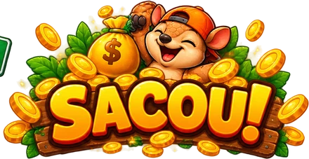

1. Escolha o nível de risco e a aposta, e toque em ATRAVESSAR: o tatu pula pra próxima faixa da BR.
2. Passou? O prêmio sobe pro multiplicador da placa. Aí você escolhe: SACAR ou atravessar mais uma faixa.
3. Foi atropelado, perde a aposta. Chegou do outro lado da estrada, saca sozinho o prêmio máximo.
RTP (retorno médio): , igual em qualquer nível e qualquer faixa em que você sacar. Cada faixa é sorteada com o gerador criptográfico do navegador.
Teclado: ↑ ou Enter atravessa, Espaço saca.